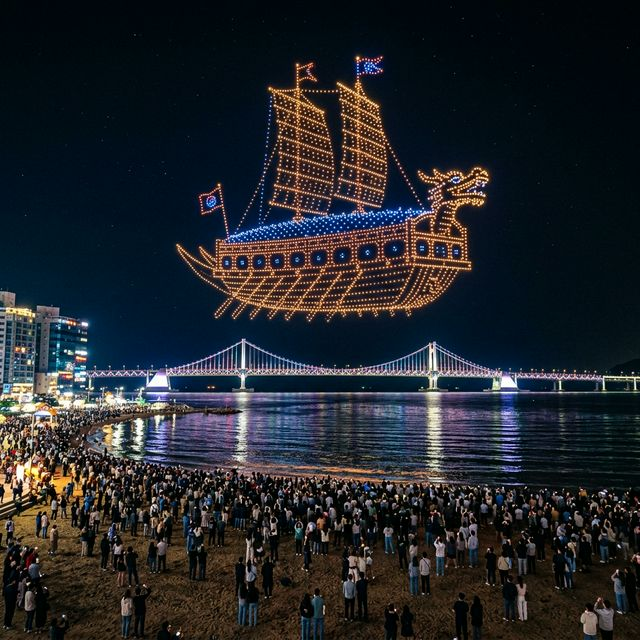
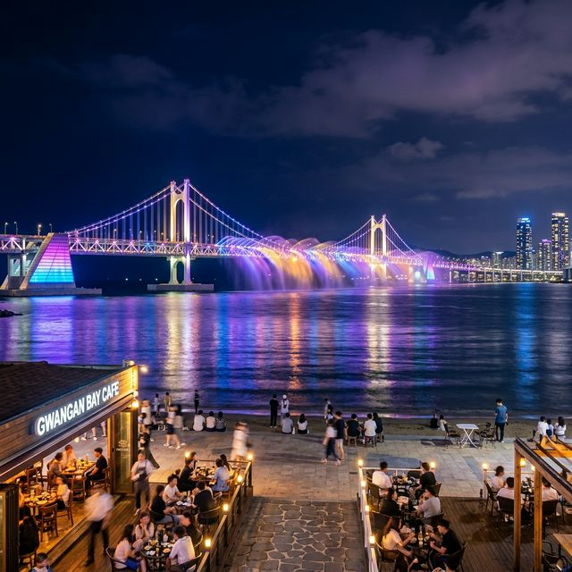

부산 광안리 M 드론 라이트쇼 시작의 항해 2026 시간 명당 주차 가이드 토요일 밤의 항연
부산의 밤하늘이 거대한 캔버스로 변합니다! 2026년 4월 18일 토요일, 광안리 해수욕장에서는 대한민국을 대표하는 야간 관광 콘텐츠 '광안리 M 드론 라이트쇼'가
화려하게 펼쳐집니다. 오늘 밤의 주제는 '시작의 항해'로, 미지의 바다를 향해 나아가는 해적들의 역동적인 드라마를 수천 대의 드론이 빛으로 그려낼 예정인데요. 광안대교의 조명과 파도 소리, 그리고
밤하늘을 수놓는 첨단 기술의 조화! 지금부터 오늘 공연을 가장 완벽하게 즐길 수 있는 실전 가이드를 전해드립니다.
1. 4월 18일 광안리 드론 쇼 주제: '시작의 항해' 해적들의 모험
오늘인 2026년 4월 18일(토) 공연의 핵심 테마는 '시작의 항해'입니다. 이는 새로운 시작과 도전을 상징하는 봄 시즌에 맞춰 기획된 스토리텔링 공연으로, 거친 파도를
뚫고 보물섬을 찾아 떠나는 해적선의 웅장한 모습을 드론 군집 비행으로 재현합니다. 수백 대의 드론이 일사불란하게 움직이며 만들어내는 거대한 해적선과 보물 지도는 관람객들에게 한 편의 판타지 영화를 보는
듯한 시각적 충격을 선사할 것입니다.
특히 이번 '시작의 항해' 공연에서는 이전보다 더욱 정교해진 3D 입체 기동 기술이 적용되어, 해적선이 파도 위에서 흔들리는 모습이나 대포를 발사하는 장면 등이 실감 나게 연출됩니다. 아이들에게는 꿈과
모험심을, 어른들에게는 기술이 주는 경이로움을 선물하는 오늘 공연은 저녁 7시와 9시, 두 차례에 걸쳐 광안리 백사장 한가운데서 무료로 관람할 수 있습니다.

광안리 밤하늘에 드론으로 그려낸 거대한 '시작의 항해' 해적선 — AI 제작 이미지
2. 2026년 상반기 공연 시간표 및 관람 소요 시간
광안리 M 드론 라이트쇼는 하절기와 동절기에 따라 공연 시간이 미세하게 조정되는데, 4월 현재는 하절기 모드로 운영됩니다. 1부 공연은 저녁 7시(19:00), 2부
공연은 저녁 9시(21:00)에 각각 시작됩니다. 각 회차당 실제 공연 시간은 약 10분에서 12분 정도로 짧지만 굵은 인상을 남깁니다. 공연 전후로는 광안대교의 화려한 미디어 파사드 쇼가 함께
진행되어 기다리는 시간조차 지루할 틈이 없습니다.
오늘처럼 테마가 있는 '정기 공연' 외에도 특별한 기념일에는 1,000대 이상의 드론이 투입되는 매머드급 공연이 열리기도 하지만, 평소 운영되는 수백 대 규모의 공연만으로도 광안리 해변을 가득
채우기에는 부족함이 없습니다. 공연 중간에 드론이 기하학적 형상에서 구체적인 사물로 변하는 찰나의 순간을 놓치지 마세요. 스마트폰 카메라를 미리 세팅해두고 매핑이 완성되는 순간 셔터를 누르는 것이
핵심입니다.
3. 실패 없는 관람을 위한 최고의 명당 포인트 TOP 3
드론 쇼를 가장 잘 볼 수 있는 제1의 명당은 수영구 생활문화센터 앞 중앙 광장입니다. 이곳은 드론이 이륙하는 지점과 가깝고 전체적인 대칭이 가장 잘 맞는 정면 뷰를
제공합니다. 하지만 그만큼 인파가 가장 많이 몰리는 곳이기도 하므로, 여유로운 관람을 원하신다면 최소 공연 시작 30분 전에는 자리를 잡으셔야 합니다. 돗자리를 준비해 백사장에 앉아 보는 것이 가장
편안한 방법입니다.
두 번째 명당은 민락 회타운 인근의 해변 구역입니다. 중앙 광장보다 살짝 측면이지만, 광안대교의 주탑과 드론 형상을 한 앵글에 담기에 최적의 구도를 제공하여 사진 작가들이
선호하는 장소입니다. 세 번째 추천 장소는 인근 해변 카페들의 루프탑입니다. 커피 한 잔의 여유와 함께 사람들의 머리 위로 펼쳐지는 드론의 향연을 내려다보는 경험은 특별한 낭만을 선사합니다. 다만,
루프탑 자리는 예약이 필수인 경우가 많으니 미리 확인해 보세요.

드론 쇼와 함께 어우러지는 광안대교의 화려한 조명 연출 — AI 제작 이미지
4. 2026년형 스마트 주차 및 교통 이용 팁
토요일 밤의 광안리는 말 그대로 '교통 지옥'입니다. 가급적 지하철을 이용하는 것이 정신 건강에 이롭습니다. 부산 지하철 2호선 금련산역(3번 출구)이나 광안역(3번
출구)에서 도보로 10분 정도 걸으면 해변에 도착할 수 있습니다. 버스를 이용할 때도 '광안리 해수욕장' 정류장에 내리면 바로 행사장으로 연결됩니다. 공연이 끝난 직후에는
지하철역에 인파가 몰리므로 잠시 해변 산책을 하거나 카페에서 시간을 보낸 뒤 이동하는 것을 추천합니다.
부득이하게 차량을 가지고 오신다면 앱 '광안리&'을 활용한 실시간 주차 확인이 필수입니다. 민락해변공원 공영주차장이나 광안리해수욕장 공영주차장은 오후 5시만 되어도 만차
상태가 되는 경우가 많습니다. 주차 공간이 없을 때는 차라리 수영구청 주차장이나 유료 민영 주차장을 검색해 보시는 것이 빠릅니다. 2026년에는 불법 주정차 단속이 더욱 강화되었으므로 지정된 주차 구역
외에는 절대 차를 세우지 않도록 주의해야 합니다.
5. 드론 쇼와 함께 즐기는 광안리 미식 투어: 민락 더 마켓
드론 쇼를 전후로 허기를 달랠 곳을 찾으신다면 최근 부산의 핫플레이스로 떠오른 '민락 더 마켓(Millac the Market)'을 추천합니다. 해변 동쪽 끝에 위치한
이곳은 트렌디한 먹거리와 소품샵이 가득한 복합 문화 공간입니다. 특히 내부의 계단식 광장에서는 탁 트인 통유리 너머로 광안리 바다를 보며 퓨전 음식이나 로컬 맥주를 즐길 수 있어 젊은 층 사이에서
인기가 대단합니다.
전통적인 부산의 맛을 원하신다면 인근 민락 회센터에서 제철 회를 맛보는 것도 좋습니다. 저녁 7시 공연을 보고 난 뒤 신선한 해산물과 함께 저녁 식사를 하고, 9시 공연을
다시 한번 관람하는 동선이 가장 완벽합니다. 최근에는 광안리 해변을 따라 감성적인 '하이볼 바'와 '수제 버거' 맛집들도 많이 생겨났으니, 취향에 맞는 맛집 지도를 미리 만들어 방문해 보시기 바랍니다.
6. 현장 안전 및 우천 시 취소 규정 확인법
드론 쇼는 날씨의 영향을 매우 많이 받는 공연입니다. 강풍이나 비, 안개 등이 심할 경우 관람객의 안전과 장비 보호를 위해 예고 없이 공연이 지연되거나 취소될 수
있습니다. 출발 전 반드시 '광안리 M 드론 라이트쇼' 공식 홈페이지나 수영구 공식 SNS 계정을 확인하는 습관이 중요합니다. 오늘처럼 맑은 날에도 고도에 따라 바람이 강하게 불면 공연 내용이 일부
축소될 수 있다는 점을 미리 인지하시기 바랍니다.
또한, 공연 시작 전후로 해변 산책로와 백사장에 엄청난 인파가 몰리므로 유모차나 반려동동 동반 시 끼임 사고나 안전거리에 각별히 유의해야 합니다. 공연 중에는 드론을 향해
레이저 포인터를 쏘거나 드론 비행 구역으로 개인용 드론을 띄우는 행위는 항공안전법 위반으로 엄격히 금지되어 있습니다. 성숙한 관람 문화가 뒷받침될 때, 광안리의 밤하늘은 더욱 안전하고 아름답게 빛날 수
있습니다.
A trendy and vibrant food court inside 'Millac the Market' in Busan. People sitting on stadium-style wooden
stairs looking out through a huge glass window at the sea. Stalls selling gourmet burgers, tacos, and craft
beer. Modern industrial design with neon signs. Lively atmosphere, ratio 1:1.
세련된 분위기에서 미식을 즐길 수 있는 민락 더 마켓 내부 전경 — AI 제작 이미지
7. 사진 작가가 전하는 드론 쇼 촬영 꿀팁
드론 쇼 사진을 잘 찍기 위해서는 몇 가지 기술적 준비가 필요합니다. 우선 삼각대는 필수입니다. 어두운 밤하늘에서 움직이는 불빛을 촬영해야 하므로 미세한 흔들림도 사진을
망칠 수 있습니다. 셔터 스피드는 너무 길게 가져가지 마세요. 드론 형상이 계속 변하기 때문에 1~2초 내외의 적절한 셔터 스피드로 설정해야 드론의 불빛이 번지지 않고 선명한 장식물처럼
찍힙니다.
스마트폰 유저라면 '야간 모드'를 활용하되 노출 값을 수동으로 살짝 낮추어 보세요. 드론의 LED 불빛이 워낙 밝아 자동 설정으로는 불빛이 뭉개지는 화이트아웃 현상이
발생할 수 있기 때문입니다. 또한, 광안대교의 조명과 물결에 반사된 빛을 프레임 하단에 적절히 배치하면 훨씬 입체적이고 화려한 결과물을 얻을 수 있습니다. 동영상 촬영 시에는 4K 60fps 설정을
권장하며, 드론이 형상을 완성해가는 과정을 타임랩스로 담아보는 것도 흥미로운 시도가 될 것입니다.
8. 주변 연계 관광 코스: 바다 위 산책로와 야외 조각 공원
드론 쇼만 보고 돌아가기 아쉽다면 광안리 해변 양 끝의 연계 코스를 둘러보세요. 남천동 방향(해변 서쪽)으로 걷다 보면 만날 수 있는 '남천 해변 공원'은 남천동 벚꽃
거리와 연결되어 봄의 끝자락을 즐기기에 좋습니다. 반대편 민락항 쪽(해변 동쪽)으로 가면 바다 위를 걷는 듯한 기분을 주는 방파제 산책로와 밤마다 화려한 조명을 밝히는 야외 조각 작품들을 만날 수
있습니다.
특히 민락 수변공원은 예전의 음주 문화에서 탈피하여 최근 깨끗한 가족 친화형 수변 문화 공간으로 재탄생했습니다. 이곳에서 바라보는 마린시티의 초고층 빌딩 숲 마천루는
홍콩이나 뉴욕이 부럽지 않은 장관을 연출합니다. 드론 쇼의 열기가 가라앉을 무렵, 차분하게 밤바다의 정취를 느끼며 걷는 이 길은 부산 여행의 질을 한 단계 높여줄 것입니다.
9. 방문 전 최종 체크리스트: 즐거운 광안리 밤 마실을 위해
마지막으로 즐거운 관람을 위한 최종 체크리스트입니다. 첫째, 바닷바람은 육지보다 훨씬 차갑고 강합니다. 4월이라도 밤에는 경량 패딩이나 두툼한 가디건을 반드시 준비하세요.
둘째, 백사장에 앉아 관람할 계획이라면 휴대용 돗자리와 엉덩이를 보호할 수 있는 방석이 큰 도움이 됩니다. 셋째, 화장실 위치를 미리 파악해 두세요. 공연 직후에는 인근 화장실 줄이 매우
길어집니다.
넷째, 공연 전후로 드론 비행 금지 구역 설정 등 현장 통제 요원들의 지시에 적극 협조해 주세요. 수만 명의 인파가 좁은 백사장에 모이는 만큼 서로를 배려하는 마음이
축제를 완성합니다. 오늘 광안리에서 마주할 '시작의 항해'가 여러분의 2026년 새로운 도전에도 멋진 영감과 에너지가 되길 바랍니다. 자, 이제 보물을 찾아 떠나는 드론들의 항해를 함께 응원하러
광안리로 떠나볼까요?